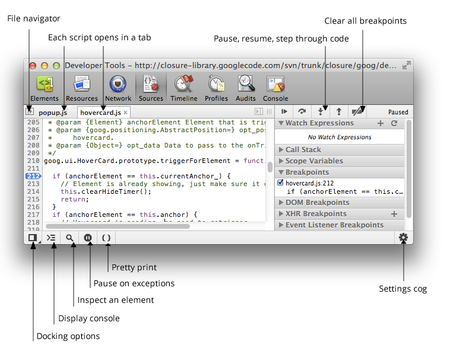
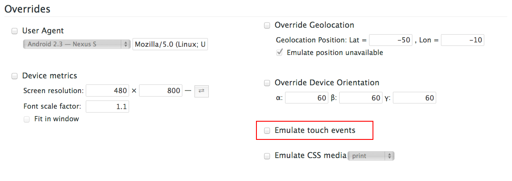

JavaScript in 2013 and Beyond
Chris Brooksbank
chris.brooksbank@rm.com
chris.brooksbank@rm.com
This slideshow uses impress.js
Slides : http://tinyurl.com/nt6fdn3
Notes : http://tinyurl.com/ov8fsw6
Slides : http://tinyurl.com/nt6fdn3
Notes : http://tinyurl.com/ov8fsw6
What is JavaScript ?
What is a website ?

A sample HTTP GET Request
Fiddler 2 lets you watch your browser talk to the webserver
Chrome DevTools gives a hugely powerful ( and FREE ) toolset to web developers
You can debug JavaScript with Chrome Devtools

You can emulate tablet touch input

Remote Debug websites on tablets

You can find JavaScript performance problems
JSFiddle.NET :
Play with CSS, JavaScript, HTML
Play with CSS, JavaScript, HTML

Unreal3 games engine
So why bother with JavaScript at all ?
An example of how we might use JavaScript

JQuery is great, but the world moves on ...

Angular TODO Demo :
Best Practices :
JSLint
Minify
Unit test
Debug and Profile
JSLint
Minify
Unit test
Debug and Profile
The Future :
Web Components
Javascript Speed Wars
Continuing to spread
JavaScript Next
Web Components
Javascript Speed Wars
Continuing to spread
JavaScript Next
The End !
Chris.Brooksbank@rm.com
Slides : http://tinyurl.com/nt6fdn3
Notes : http://tinyurl.com/ov8fsw6
Chris.Brooksbank@rm.com
Slides : http://tinyurl.com/nt6fdn3
Notes : http://tinyurl.com/ov8fsw6